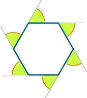
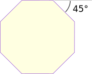
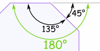
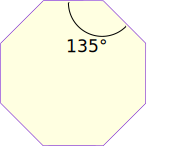
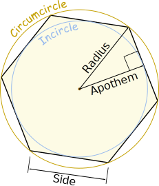
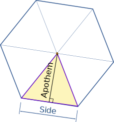
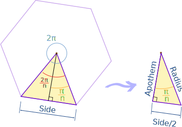
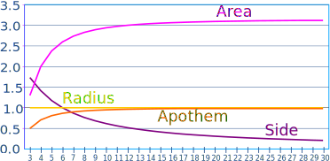

Properties of Regular Polygons
Polygon
A polygon is a plane shape (two-dimensional) with straight sides. Examples include triangles, quadrilaterals, pentagons, hexagons and so on.
Regular
|
A "Regular Polygon" has:
Otherwise it is irregular. |
|

Here we look at Regular Polygons only.
Properties
So what can we know about regular polygons? First of all, we can work out angles.
|  |
Exterior AngleThe Exterior Angle is the angle between any side of a shape,
|
All the Exterior Angles of a polygon add up to 360°, so:
Each exterior angle must be 360°/n
(where n is the number of sides)
Press play button to see.

Exterior Angle
(of a regular octagon)
Example: What is the exterior angle of a regular octagon?
An octagon has 8 sides, so:
|  |
Interior AnglesThe Interior Angle and Exterior Angle are measured from the same line, so they add up to 180°. |
Interior Angle = 180° − Exterior Angle
We know the Exterior angle = 360°/n, so:
Interior Angle = 180° − 360°/n
Which can be rearranged like this:
So we also have this:
Interior Angle = (n−2) × 180° / n
Example: What is the interior angle of a regular octagon?
A regular octagon has 8 sides, so:
Exterior Angle = 360° / 8 = 45°
Interior Angle = 180° − 45° = 135°

Interior Angle
(of a regular octagon)
Or we could use:
Example: What are the interior and exterior angles of a regular hexagon?
A regular hexagon has 6 sides, so:
Exterior Angle = 360° / 6 = 60°
Interior Angle = 180° − 60° = 120°
And now for some names:
"Circumcircle, Incircle, Radius and Apothem ..."
Sounds quite musical if you repeat it a few times, but they are just the names of the "outer" and "inner" circles (and each radius) that can be drawn on a polygon like this:

The "outside" circle is called a circumcircle, and it connects all vertices (corner points) of the polygon.
The radius of the circumcircle is also the radius of the polygon.
The "inside" circle is called an incircle and it just touches each side of the polygon at its midpoint.
The radius of the incircle is the apothem of the polygon.
(Not all polygons have those properties, but triangles and regular polygons do).
Breaking into Triangles

We can learn a lot about regular polygons by breaking them into triangles like this:
Notice that:
- the "base" of the triangle is one side of the polygon.
- the "height" of the triangle is the "Apothem" of the polygon
Now, the area of a triangle is half of the base times height, so:
Area of one triangle = base × height / 2 = side × apothem / 2
To get the area of the whole polygon, just add up the areas of all the little triangles ("n" of them):
Area of Polygon = n × side × apothem / 2
And since the perimeter is all the sides = n × side, we get:
Area of Polygon = perimeter × apothem / 2
A Smaller Triangle
By cutting the triangle in half we get this:

(Note: The angles are in radians, not degrees)
The small triangle is right-angled and so we can use sine, cosine and tangent to find how the side, radius, apothem and n (number of sides) are related:
| sin(π/n) = (Side/2) / Radius | Side = 2 × Radius × sin(π/n) | |
| cos(π/n) = Apothem / Radius | Apothem = Radius × cos(π/n) | |
| tan(π/n) = (Side/2) / Apothem | Side = 2 × Apothem × tan(π/n) |
There are a lot more relationships like those (most of them just "re-arrangements"), but those will do for now.
More Area Formulas
We can use that to calculate the area when we only know the Apothem:
And we know (from the "tan" formula above) that:
Side = 2 × Apothem × tan(π/n)
So:
And there are 2 such triangles per side, or 2n for the whole polygon:
Area of Polygon = n × Apothem2 × tan(π/n)
When we don't know the Apothem, we can use the same formula but re-worked for Radius or for Side:
Area of Polygon = ½ × n × Radius2 × sin(2 × π/n)
Area of Polygon = ¼ × n × Side2 / tan(π/n)
A Table of Values
And here is a table of Side, Apothem and Area compared to a Radius of "1", using the formulas we have worked out:
| Type | Name when
Regular |
Sides
(n) |
Shape | Interior Angle | Radius | Side | Apothem | Area |
|---|---|---|---|---|---|---|---|---|
| Triangle
(or Trigon) |
Equilateral
Triangle |
3 |  |
60° | 1 | 1.732
(√3) |
0.5 | 1.299
(¾√3) |
| Quadrilateral (or Tetragon) |
Square | 4 |  |
90° | 1 | 1.414
(√2) |
0.707
(1/√2) |
2 |
| Pentagon | Regular
Pentagon |
5 |  |
108° | 1 | 1.176 | 0.809 | 2.378 |
| Hexagon | Regular
Hexagon |
6 |  |
120° | 1 | 1 | 0.866
(½√3) |
2.598
((3/2)√3) |
| Heptagon
(or Septagon) |
Regular
Heptagon |
7 |  |
128.571° | 1 | 0.868 | 0.901 | 2.736 |
| Octagon | Regular
Octagon |
8 |  |
135° | 1 | 0.765 | 0.924 | 2.828
(2√2) |
| ... | ... | |||||||
| Pentacontagon | Regular
Pentacontagon |
50 | 172.8° | 1 | 0.126
|
0.998
|
3.133 | |
| (Note: values correct to 3 decimal places only) | ||||||||

Graph
And here is a graph of the table above, but with number of sides ("n") from 3 to 30.
Notice that as "n" gets bigger, the Apothem is tending towards 1 (equal to the Radius) and that the Area is tending towards π = 3.14159..., just like a circle.
What is the Side length tending towards?